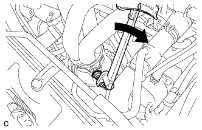
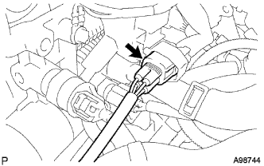

Air Fuel Ratio Sensor (2AZ-FE) Installation |
| 1. Air Fuel Ratio Sensor Installation |
 |
Using SST, install the air fuel ratio sensor to the exhaust manifold.
 |
Install the air fuel ratio sensor connector.
| 2. Install Exhaust Manifold Heat Insulator NO.1 |
 |
Install the exhaust manifold heat insulator No.1 with 4 bolts.
| 3. Install Radiator Upper Air Deflector |
Install the radiator upper air deflector with the 8 clips.
| 4. Inspect for Exhaust Gas Leaks |
Check that there are no exhaust gas leaks from the locations shown in the illustration (exhaust pipe joints and each sensor installation area).